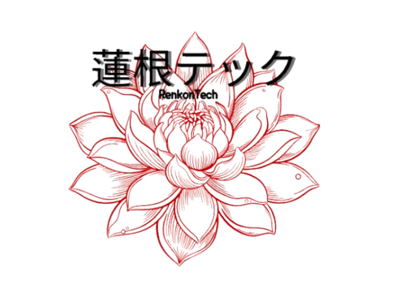

Processos manuais
Conferências demoradas no fechamento do caixa.

RenkonTech Conhecer projeto ↗O RenkonTech integra pedidos, mesas, pagamentos e controle financeiro em uma única experiência digital.
O RenkonTech nasceu para transformar a rotina operacional de um restaurante em um processo mais organizado, rastreável e eficiente.
A proposta é conectar os principais pontos da operação — mesas, pedidos, pagamentos e caixa — reduzindo processos manuais e facilitando a tomada de decisão.
Em uma operação tradicional, informações podem ficar espalhadas entre comandas, recibos, planilhas e conferências manuais. O resultado é retrabalho e maior possibilidade de divergências.
Conferências demoradas no fechamento do caixa.
Dados de pedidos e pagamentos em diferentes lugares.
Mais dificuldade para identificar inconsistências.
O RenkonTech organiza o fluxo completo e transforma dados operacionais em informação útil para o restaurante.
Visualização do salão, status das mesas e associação dos pedidos ao consumo.
Criação e acompanhamento de pedidos de forma organizada.
Registro de PIX, cartão e dinheiro, com histórico das transações.
Abertura, movimentações, despesas, conferência e fechamento do caixa.
Registro das operações para aumentar a rastreabilidade e segurança.
Uma arquitetura preparada para organizar a aplicação, manter os dados consistentes e permitir evolução futura do sistema.
Um projeto criado para transformar a gestão de restaurantes através da tecnologia.
Voltar ao início ↑